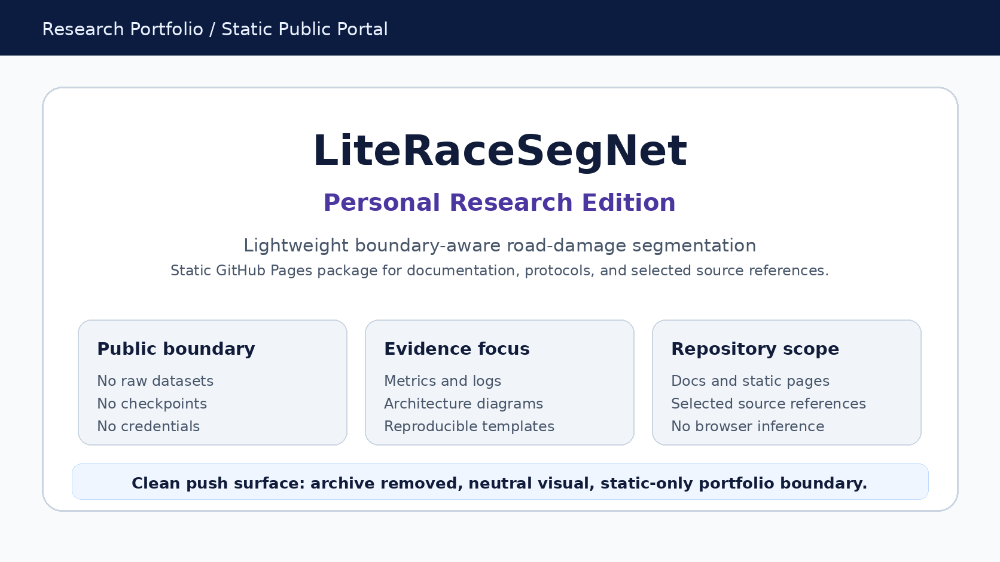

v15.2 Personal Research Edition
LiteRaceSegNet Personal Research Edition
A compact public overview of the project structure, evidence material, and follow-up evaluation plan for lightweight road-damage segmentation.
This portal is meant to make the project easier to review, not to replace the full source tree.
01
Start here
A short reading route for reviewers who want the project scope, evidence structure, and repository layout first.
Open guide02
Architecture
Model structure, context/detail branches, boundary-guided fusion, and output interpretation notes.
Open architecture03
Evidence
Available result material, protocol status, visual evidence, and measured-versus-planned boundaries.
Open evidence04
Research extension
Follow-up evaluation direction around output stability, boundary behavior, and hardware-aware comparison.
Open extension05
Output stability
Mask area drift, boundary IoU drift, component delta, centroid shift, and precision comparison metadata.
Open metrics06
Repository scope
Included files, excluded private material, and the public review boundary for this portfolio surface.
Open repository mapPortfolio focus
Readable evidence, restrained claims
This site organizes the project in the order a reviewer is likely to read it: overview, architecture, evidence status, and the follow-up evaluation plan.
Review route
- Start with the reviewer guide for the shortest path.
- Use the architecture page to understand the model direction.
- Use the evidence page to separate available material from planned work.
- Use the extension pages to read future evaluation directions without treating them as completed claims.